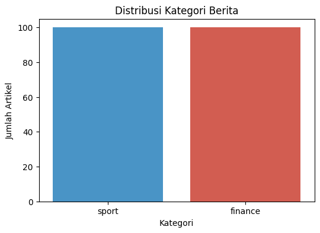
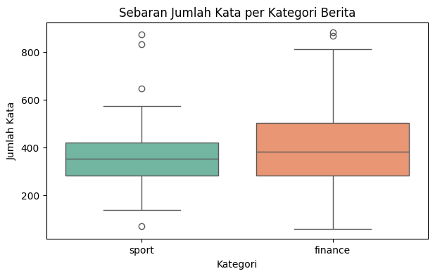

02. Data Understanding Berita Detik.com#
Notebook ini khusus untuk tahap Data Understanding pada dataset berita hasil crawling (dataset_detik.csv).
Tujuannya adalah memahami struktur data, memeriksa kualitas data (missing value & duplikasi), serta menganalisis distribusi kelas dan statistik teks.
1. Import Library#
Mengimpor library yang diperlukan untuk manipulasi dan visualisasi data.
import pandas as pd
import matplotlib.pyplot as plt
import seaborn as sns
from IPython.display import display
2. Membaca Dataset#
Membaca file dataset_detik.csv hasil tahap crawling.
df = pd.read_csv("dataset_detik.csv")
print("Ukuran Dataset:", df.shape)
print("Daftar Kolom :", df.columns.tolist())
display(df.head())
Ukuran Dataset: (200, 4)
Daftar Kolom : ['id', 'isi_berita', 'label', 'url']
| id | isi_berita | label | url | |
|---|---|---|---|---|
| 0 | SP001 | Profil Desak Made Peraih Emas Keempat RI: Kena... | sport | https://sport.detik.com/sport-lain/d-8686722/p... |
| 1 | SP002 | Gacor di Asian Games, Leo/Daniel Kini Bidik Tu... | sport | https://sport.detik.com/raket/d-8686185/gacor-... |
| 2 | SP003 | Asian Games 2026: Desak Made Raih Emas Keempat... | sport | https://sport.detik.com/sport-lain/d-8686648/a... |
| 3 | SP004 | Panjat Tebing Buru Medali, Yenni Wahid: Aditya... | sport | https://sport.detik.com/sport-lain/d-8686152/p... |
| 4 | SP005 | Mau Nonton FIA Rallycross World Cup Indonesia?... | sport | https://sport.detik.com/sportstyle/d-8686158/m... |
3. Struktur dan Tipe Data#
Melihat ringkasan tipe data dan memastikan tidak ada nilai kosong (missing values).
print("--- Informasi Dataset ---")
df.info()
print("\n--- Pengecekan Missing Value ---")
print(df.isnull().sum())
--- Informasi Dataset ---
<class 'pandas.core.frame.DataFrame'>
RangeIndex: 200 entries, 0 to 199
Data columns (total 4 columns):
# Column Non-Null Count Dtype
--- ------ -------------- -----
0 id 200 non-null object
1 isi_berita 200 non-null object
2 label 200 non-null object
3 url 200 non-null object
dtypes: object(4)
memory usage: 6.4+ KB
--- Pengecekan Missing Value ---
id 0
isi_berita 0
label 0
url 0
dtype: int64
4. Pemeriksaan Duplikasi Data#
Memeriksa apakah terdapat URL atau isi berita yang terduplikasi.
print("Jumlah Duplikat URL :", df["url"].duplicated().sum())
print("Jumlah Duplikat Isi Berita:", df["isi_berita"].duplicated().sum())
Jumlah Duplikat URL : 0
Jumlah Duplikat Isi Berita: 0
5. Distribusi Label#
Melihat keseimbangan data antara kategori sport dan finance.
distribusi = df["label"].value_counts()
print("Distribusi Label:\n", distribusi)
# Visualisasi Bar Chart Distribusi Label
plt.figure(figsize=(6, 4))
sns.barplot(x=distribusi.index, y=distribusi.values, palette=["#3498db", "#e74c3c"])
plt.title("Distribusi Kategori Berita")
plt.xlabel("Kategori")
plt.ylabel("Jumlah Artikel")
plt.show()
Distribusi Label:
label
sport 100
finance 100
Name: count, dtype: int64
C:\Users\ELVITA\AppData\Local\Temp\ipykernel_23076\2174667711.py:6: FutureWarning:
Passing `palette` without assigning `hue` is deprecated and will be removed in v0.14.0. Assign the `x` variable to `hue` and set `legend=False` for the same effect.
sns.barplot(x=distribusi.index, y=distribusi.values, palette=["#3498db", "#e74c3c"])

6. Analisis Statistik Panjang Teks#
Menghitung panjang karakter dan jumlah kata pada isi berita per kategori.
# Hitung jumlah karakter dan jumlah kata
df["panjang_karakter"] = df["isi_berita"].astype(str).apply(len)
df["jumlah_kata"] = df["isi_berita"].astype(str).apply(lambda x: len(x.split()))
print("Statistik Panjang Karakter per Kategori:")
display(df.groupby("label")["panjang_karakter"].describe())
print("\nStatistik Jumlah Kata per Kategori:")
display(df.groupby("label")["jumlah_kata"].describe())
# Visualisasi Boxplot Panjang Kata
plt.figure(figsize=(7, 4))
sns.boxplot(x="label", y="jumlah_kata", data=df, palette="Set2")
plt.title("Sebaran Jumlah Kata per Kategori Berita")
plt.xlabel("Kategori")
plt.ylabel("Jumlah Kata")
plt.show()
Statistik Panjang Karakter per Kategori:
| count | mean | std | min | 25% | 50% | 75% | max | |
|---|---|---|---|---|---|---|---|---|
| label | ||||||||
| finance | 100.0 | 2833.23 | 1257.044641 | 392.0 | 2040.25 | 2715.5 | 3656.25 | 6836.0 |
| sport | 100.0 | 2507.95 | 911.469347 | 443.0 | 1916.50 | 2355.0 | 2908.00 | 6331.0 |
Statistik Jumlah Kata per Kategori:
| count | mean | std | min | 25% | 50% | 75% | max | |
|---|---|---|---|---|---|---|---|---|
| label | ||||||||
| finance | 100.0 | 389.70 | 168.159046 | 59.0 | 281.0 | 381.5 | 504.25 | 884.0 |
| sport | 100.0 | 363.58 | 126.589624 | 69.0 | 282.0 | 351.5 | 419.75 | 874.0 |
C:\Users\ELVITA\AppData\Local\Temp\ipykernel_23076\3593138865.py:13: FutureWarning:
Passing `palette` without assigning `hue` is deprecated and will be removed in v0.14.0. Assign the `x` variable to `hue` and set `legend=False` for the same effect.
sns.boxplot(x="label", y="jumlah_kata", data=df, palette="Set2")

7. Sampel Isi Berita per Kategori#
print("=== Contoh Berita Sport ===")
sample_sport = df[df["label"] == "sport"].iloc[0]
print(f"ID : {sample_sport['id']}")
print(f"Teks: {sample_sport['isi_berita'][:300]}...\n")
print("=== Contoh Berita Finance ===")
sample_finance = df[df["label"] == "finance"].iloc[0]
print(f"ID : {sample_finance['id']}")
print(f"Teks: {sample_finance['isi_berita'][:300]}...")
=== Contoh Berita Sport ===
ID : SP001
Teks: Profil Desak Made Peraih Emas Keempat RI: Kenal Panjat Tebing karena Bibi Mercy Raya - detikSport Rabu, 30 Sep 2026 20:15 WIB Jakarta - Desak Made Rita Kusuma Dewi kembali bikin bangga Indonesia. Ia menjadi atlet tercepat se-Asia setelah mempertahankan medali emasnya di Asian Games 2026 Aichi-Nagoya...
=== Contoh Berita Finance ===
ID : FN001
Teks: Batas Penghasilan Tidak Kena Pajak Mau Dinaikkan Herdi Alif Al Hikam - detikFinance Rabu, 30 Sep 2026 20:30 WIB ... Tautan telah disalin Jakarta - Pemerintah membuka peluang untuk merevisi ambang batas Penghasilan Tidak Kena Pajak (PTKP). Artinya, bisa jadi batas penghasilan yang tidak kena pajak bi...